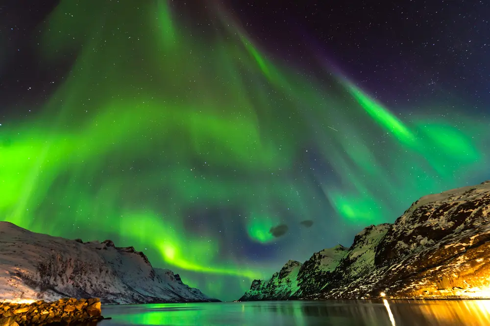

As you already know: the world is a beautiful place. There are so many exceptional places to visit before you die!
Remember, that often the best surprises lurk in the simple pleasures, so do not always look for the most “popular”, but rather get off the beaten tourist track and really explore!
Here are some spectacular places to visit before you die. Put them on your travel bucket list, or just enjoy the ride in pictures. After all, nothing says it better than this cool travel quote from Ray Bradbury.
“Stuff your eyes with wonder, live as if you’d drop dead in ten seconds. See the world. It’s more fantastic than any dream made or paid for in factories.”
- Admire the spectacle of the Northern Lights in Scandinavia

A classic winter getaway, the Northern Lights are a truly wonderous sight.
- Wulingyuan, China

Thousands of sandstone pillars stand tall, some can even be higher than the Empire State Building!
- Antarctica

The ice kingdom of Antarctica!
- Antelope Canyon, USA

Walking through the weird curved formations of Antelope Canyon, it’s difficult to believe that it’s not man made.
- The Dead Sea

We all know that you can float on The Dead Sea. This curious natural wonder is 9.6 times saltier than the ocean.